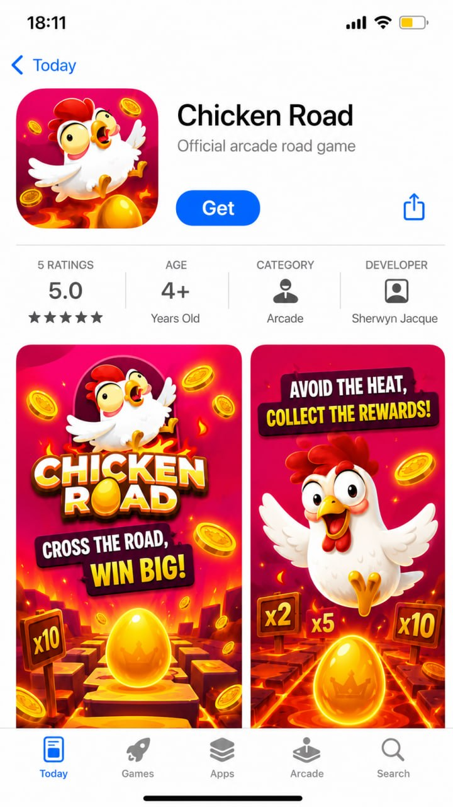
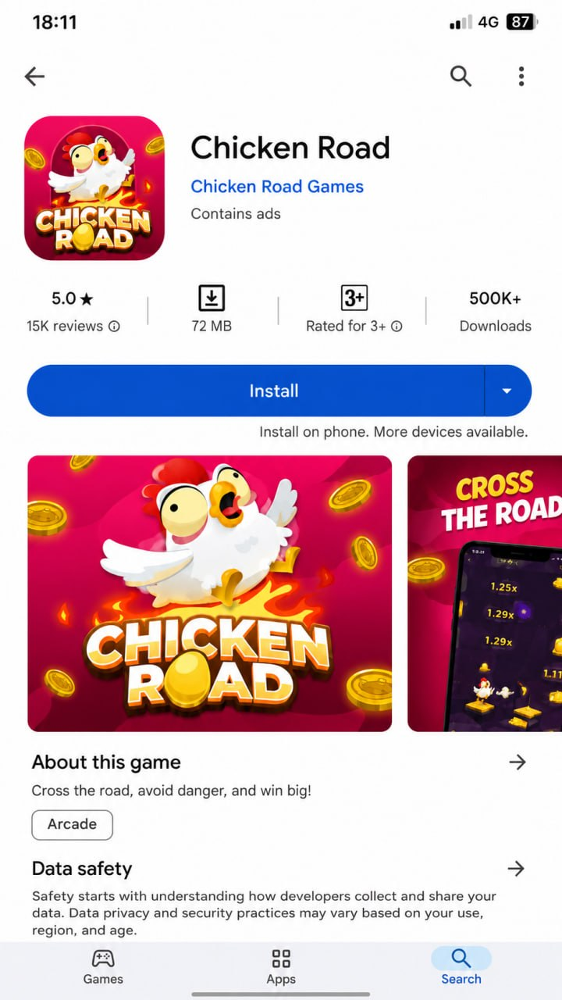
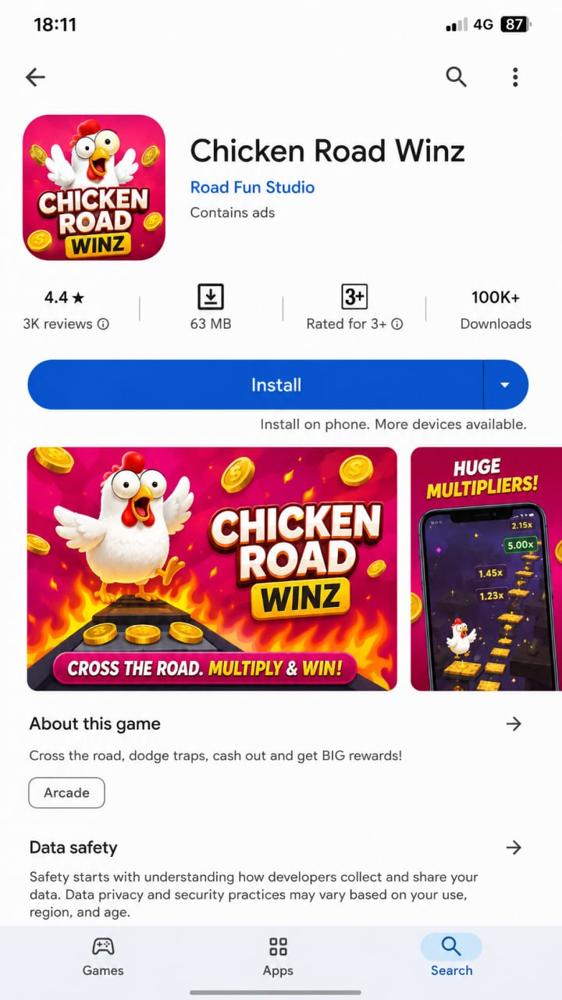

Download the Chicken Road App & Game (Safe, Official Route)
Get the real Chicken Road game through the official operator — no fake APKs, no cloned sites.
🔞 18+ only · Real-money gambling
Looking to download Chicken Road? The safest route is through the official operator: on Android, iOS, or straight in your browser. Most results for 'Chicken Road APK' are clone sites, not the real game. Below is how to get it safely, how to spot fakes, and what people actually mean by a Chicken Road 'earning app'.
The official Chicken Road app
Chicken Road is available as the official app on both iOS and Android — download it from the Apple App Store or Google Play, or play instantly in your mobile browser. Always install from the official store listing; "Chicken Road APK" links found elsewhere are usually clone sites.

● App Store — iOS

▶ Google Play — Android
How to Get the Chicken Road App
Step 1: Open a licensed operator that carries Chicken Road (see our casinos page) in your phone's browser. Step 2: Log in or create an account with the operator. Step 3: On Android, use the operator's 'add to home screen' or their official app if offered; on iOS, add it to your home screen from Safari or install their App Store app where available. Step 4: Open Chicken Road from your account and play. You never need a third-party APK file to play.
Avoid Fake APKs and Clone Sites
Most 'Chicken Road APK' downloads and lookalike sites are clones. Watch for these red flags: a domain that isn't a known licensed operator; promises of guaranteed wins, 'hacks' or 'mod' versions; an APK hosted on a random file site; no licensing information; and no clear deposit or withdrawal terms. Any of these, close the tab. When in doubt, just play in your browser at a licensed operator. See Is Chicken Road legit or a scam? for the full checklist.
Real vs fake: spot the clone
Clones copy the artwork and even the exact name, so they look almost identical in the store. Check the developer, category and rating count before installing — the fake below uses the same name but lists a wrong category (Utilities), an unknown developer and only a handful of ratings.
✓ Original
Chicken Road — exact name
Developer: Chicken Road Games
5.0★ · 15K reviews · 500K+ downloads
✕ Fake clone

Same name, but category is Utilities (not a game)
Developer: Sherwyn Jacque (unknown)
Only 5 ratings · odd subtitle "Care of birds and pigeons"
Same look, different app — always verify the developer and store listing before installing
Will It Run on My Phone?
Chicken Road is a lightweight browser game, so it runs on almost any modern Android or iPhone with an up-to-date browser and a stable connection. There's nothing heavy to install, and no special hardware is needed. If a page insists you download a large APK just to play, that's a sign it's not the real game.
Is Chicken Road an 'Earning App'?
Many people search for a Chicken Road 'earning app', so it's worth being clear: Chicken Road is a real-money gambling game, not an income app. You can win money and you can just as easily lose it, and no app, trick or 'strategy' guarantees a profit. Treat it as paid entertainment, set a budget, and never play with money you can't afford to lose. 18+.
App or Browser: Which Is Better?
For most players the browser is simplest: nothing to install, always up to date, and you play at the same licensed operator. An operator app can be handy for quick access and notifications if one is offered officially. Both give you the identical game; the difference is convenience, not the odds.
Where to Play Chicken Road
Ready to play? Compare licensed operators that carry Chicken Road, with bonuses and payout speeds, on our Chicken Road casinos page. Check the offer applies in your region before depositing. 18+.
Chicken Road App FAQ
Is there an official Chicken Road app?
Chicken Road is played through licensed casino operators; some offer a mobile app, and all let you play in your phone's browser. Get it from the operator's official site, not from random 'Chicken Road APK' downloads.
How do I download Chicken Road on Android?
Open the official operator's site on your Android phone and follow their app or 'add to home screen' instructions. Avoid third-party APK files that claim to be Chicken Road, as they're usually clones. 18+.
Is the Chicken Road APK safe?
A random 'Chicken Road APK' from an unofficial site is a risk: clones can steal logins or take deposits and disappear. Only install software from the official operator. When in doubt, just play in your browser.
Is Chicken Road an earning app?
Chicken Road is a real-money gambling game, not an income app. You can win or lose money, and no strategy guarantees a profit. Treat it as entertainment, set limits, and never play with money you can't afford to lose.
Can I play Chicken Road on iPhone?
Yes. You can play Chicken Road on iPhone through the operator's website in Safari, or their iOS app where available. There's no need to sideload anything. 18+.
Play Responsibly
Chicken Road is a real-money game of chance, not a way to make money. Play for entertainment only, set deposit and time limits before you start, and never bet money you can't afford to lose. You must be 18+ (or the legal age in your country). If gambling stops being fun or feels out of control, get free, confidential help at BeGambleAware.org or GamCare (or your local helpline).
We may earn a commission if you sign up through links on this page, at no extra cost to you. It never affects our rankings or verdicts.
By Ryan Murton, Growth & Product covering crash and casino games for 7 years. Last updated: . See our editorial approach on the About page.
How to download Chicken Road — step by step
1
Open a licensed operator
In your phone's browser, open a licensed casino that carries Chicken Road — see our casinos page. Avoid random "Chicken Road APK" results.
2
Log in or create an account
Register or sign in with the operator and complete any verification (KYC). This keeps deposits and withdrawals on a licensed, regulated site.
3
Add it to your home screen
Android: use the operator's "Add to home screen" prompt, or their official app if offered. iOS: in Safari tap Share → "Add to Home Screen". No third-party APK needed.
4
Open Chicken Road and play
Launch Chicken Road from your account, set your stake and difficulty, and cash out before the crash. Prefer no install? Just play in the browser — it's the same game.